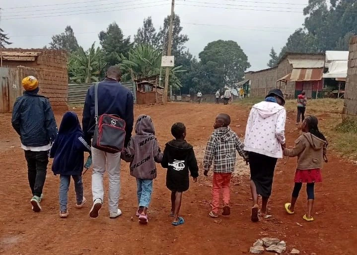

My first deep exposure to mentorship did not happen in a classroom or a conference room. It happened on the streets of Nairobi, working alongside BWAB Kenya. This was my introduction to mentoring children who survive in environments shaped by poverty, displacement, substance use, and social exclusion.
Trust is not given because you have a badge or a good heart. It is earned slowly — sometimes through laughter, sometimes through silence.
Outreach sessions focused on drug use sensitisation, disease prevention, hygiene, and personal safety. But mentorship went beyond information. It meant listening to stories that do not fit into reports, understanding survival behaviours, and realising that resilience often looks nothing like success as defined in textbooks.
UNICEF estimates tens of thousands of children live and work on the streets in Kenya, with Nairobi hosting a significant proportion due to urban migration and economic vulnerability. UNICEF Kenya ↗
